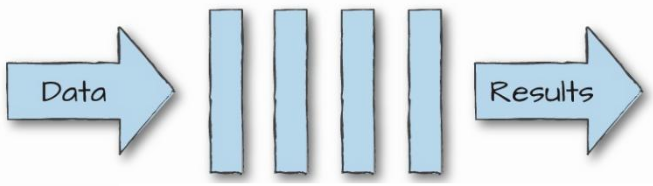
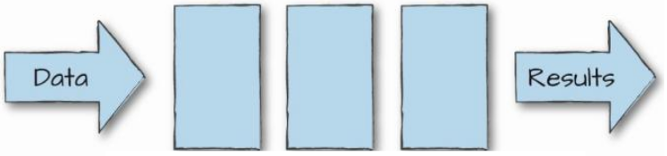
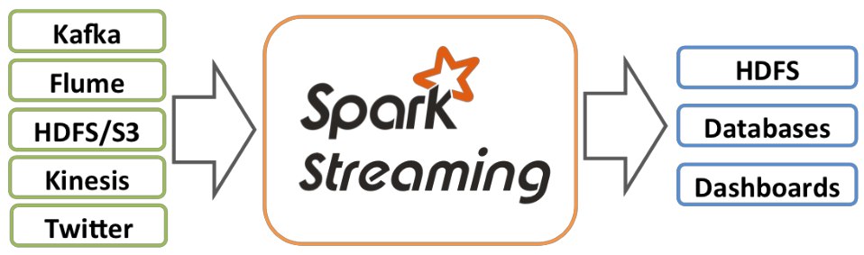
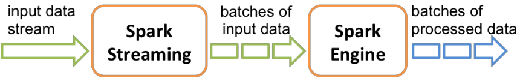
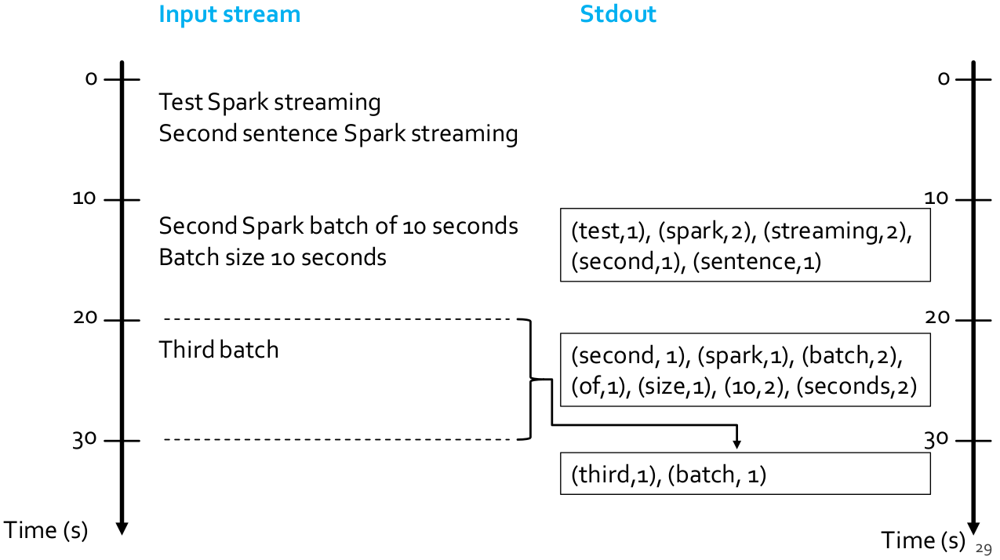
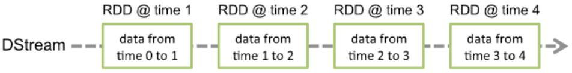
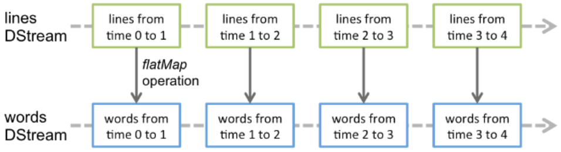
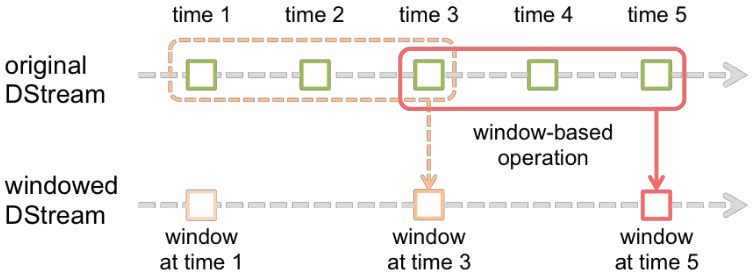
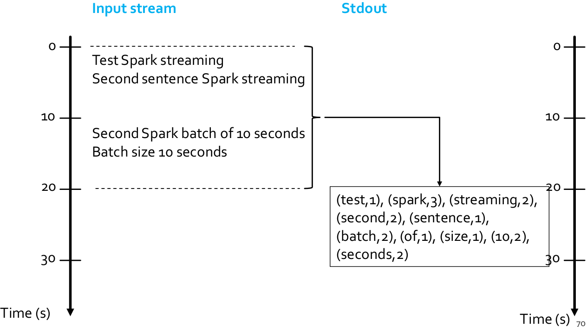
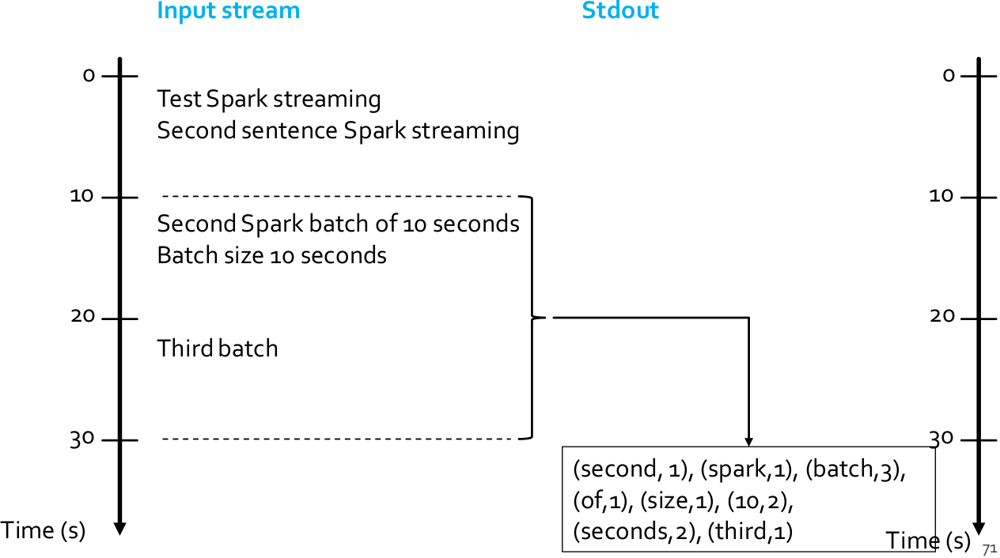

26 Streaming data analytics frameworks
Introduction
What is streaming processing?
Streaming processing is the act of continuously incorporating new data to compute a result. Input data is unbounded (i.e., it has no beginning and no end). Series of events that arrive at the stream processing system, and the application will output multiple versions of the results as it runs or put them in a storage.
Many important applications must process large streams of live data and provide results in near-real-time
- Social network trends
- Website statistics
- Intrusion detection systems
- …
The main advantages of stream processing are:
- Vastly higher throughput in data processing
- Low latency: application respond quickly (e.g., in seconds). It can keep states in memory
- More efficient in updating a result than repeated batch jobs, because it automatically incrementalizes the computation
Some requirements and challenges are:
- Scalable to large clusters
- Responding to events at low latency
- Simple programming model
- Processing each event exactly once despite machine failures - Efficient fault-tolerance in stateful computations
- Processing out-of-order data based on application timestamps (also called event time)
- Maintaining large amounts of state
- Handling load imbalance and stragglers
- Updating your application’s business logic at runtime
Stream processing frameworks for big streaming data analytics
Several frameworks have been proposed to process in real-time or in near real-time data streams
- Apache Spark (Streaming component)
- Apache Storm
- Apache Flink
- Apache Samza
- Apache Apex
- Apache Flume
- Amazon Kinesis Streams
- …
All these frameworks use a cluster of servers to scale horizontally with respect to the (big) amount of data to be analyzed.
Main solutions
There are two main solutions
- Continuous computation of data streams. In this case, data are processed as soon as they arrive: every time a new record arrives from the input stream, it is immediately processed and a result is emitted as soon as possible. This is real-time processing.
- Micro-batch stream processing. Input data are collected in micro-batches, where each micro-batch contains all the data received in a time window (typically less than a few seconds of data). One micro-batch a time is processed: every time a micro-batch of data is ready, its entire content is processed and a result is emitted. This is near real-time processing.


Input data processing and result guarantees
- At-most-once
- Every input element of a stream is processed once or less
- It is also called no guarantee
- The result can be wrong/approximated
- At-least-once
- Every input element of a stream is processed once or more
- Input elements are replayed when there are failures
- The result can be wrong/approximated
- Exactly-once
- Every input element of a stream is processed exactly once
- Input elements are replayed when there are failures
- If elements have been already processed they are not reprocessed
- The result is always correct
- Slower than the other processing approaches
Spark Streaming
What is Spark Streaming
Spark Streaming is a framework for large scale stream processing
- Scales to 100s of nodes
- Can achieve second scale latencies
- Provides a simple batch-like API for implementing complex algorithm
- Micro-batch streaming processing
- Exactly-once guarantees
- Can absorb live data streams from Kafka, Flume, ZeroMQ, Twitter, …

Many important applications must process large streams of live data and provide results in near-real-time
- Social network trends
- Website statistics
- Intrusion detection systems
- …
The requirements are
- Scalable to large clusters
- Second-scale latencies
- Simple programming model
- Efficient fault-tolerance in stateful computations
Spark discretized stream processing
Spark streaming runs a streaming computation as a series of very small, deterministic batch jobs. It splits each input stream in portions and processes one portion at a time (in the incoming order): the same computation is applied on each portion (called batch) of the stream.
So, Spark streaming
- Splits the live stream into batches of X seconds
- Treats each batch of data as RDDs and processes them using RDD operations
- Finally, the processed results of the RDD operations are returned in batches

Word count implementation using Spark streaming. Problem specification:
- The input is a stream of sentences
- Split the input stream in batches of 10 seconds each and print on the standard output, for each batch, the occurrences of each word appearing in the batch (i.e., execute the word count application one time for each batch of 10 seconds)

- DSream
- Sequence of RDDs representing a discretized version of the input stream of data (Twitter, HDFS, Kafka, Flume, ZeroMQ, Akka Actor, TCP sockets, …)
- One RDD for each batch of the input stream
- Transformations
- Modify data from one DStream to another
- Standard RDD operations (map, countByValue, reduce, join, …)
- Window and Stateful operations (window, countByValueAndWindow, …)
- Output Operations/Actions
- Send data to external entity (saveAsHadoopFiles, saveAsTextFile, …)
Word count using DStreams
A DStream is represented by a continuous series of RDDs. Each RDD in a DStream contains data from a certain batch/interval.

Any operation applied on a DStream translates to operations on the underlying RDDs. These underlying RDD transformations are computed by the Spark engine.

Fault-tolerance
DStreams remember the sequence of operations that created them from the original fault-tolerant input data. Batches of input data are replicated in memory of multiple worker nodes, therefore fault-tolerant: data lost due to worker failure, can be recomputed from input data.
Spark streaming programs
Basic structure of a Spark streaming program
- Define a Spark Streaming Context object. Define the size of the batches (in seconds) associated with the Streaming context.
- Specify the input stream and define a DStream based on it
- Specify the operations to execute for each batch of data
- Use transformations and actions similar to the ones available for standard RDDs
- Invoke the start method, to start processing the input stream
- Wait until the application is killed or the timeout specified in the application expires: if the timeout is not set and the application is not killed the application will run forever
Spark streaming context
The Spark Streaming Context is defined by using the StreamingContext(SparkConf sparkC, Duration batchDuration) constructor of the class pyspark.streaming.StreamingContext. The batchDuration parameter specifies the size of the batches in seconds
After a context is defined, the next steps are
- Define the input sources by creating input Dstreams
- Define the streaming computations by applying transformation and output operations to DStreams
Input streams
The input Streams can be generated from different sources
- TCP socket, Kafka, Flume, Kinesis, Twitter.
- Also a HDFS folder can be used as input stream. This option is usually used during the application development to perform a set of initial tests.
Input: TCP socket
A DStream can be associated with the content emitted by a TCP socket: socketTextStream(String hostname, int port_number) is used to create a DStream based on the textual content emitted by a TCP socket.
Input: (HDFS) folder
A DStream can be associated with the content of an input (HDFS) folder: every time a new file is inserted in the folder, the content of the file is stored in the associated DStream and processed. Pay attention that updating the content of a file does not trigger/change the content of the DStream. textFileStream(String folder) is used to create a DStream based on the content of the input folder.
Input: other sources
Usually DStream objects are defined on top of streams emitted by specific applications that emit real-time streaming data (e.g., Apache Kafka, Apache Flume, Kinesis, Twitter). It is also possible to write custom applications for generating streams of data, however Kafka, Flume and similar tools are usually a more reliable and effective solutions for generating streaming data.
Transformations
Analogously to standard RDDs, also DStreams are characterized by a set of transformations that, when applied to DStream objects, return a new DStream Object. The transformation is applied on one batch (RDD) of the input DStream at a time and returns a batch (RDD) of the new DStream (i.e., each batch (RDD) of the input DStream is associated with exactly one batch (RDD) of the returned DStream). Many of the available transformations are the same transformations available for standard RDDs.
Basic transformations
| Transformation | Effect |
|---|---|
map(func) |
It returns a new DStream by passing each element of the source DStream through a function func. |
flatMap(func) |
each input item can be mapped to 0 or more output items. Returns a new DStream. |
filter(func) |
It returns a new DStream by selecting only the records of the source DStream on which func returns true. |
reduce(func) |
It returns a new DStream of single-element RDDs by aggregating the elements in each RDD of the source DStream using a function func. The function must be associative and commutative so that it can be computed in parallel. Note that the reduce method of DStreams is a transformation. |
reduceByKey(func) |
When called on a DStream of \((K, V)\) pairs, returns a new DStream of \((K, V)\) pairs where the values for each key are aggregated using the given reduce function. |
combineByKey(...) |
when called on a DStream of \((K, V)\) pairs, returns a new DStream of \((K, W)\) pairs where the values for each key are aggregated using the given combine functions. The parameters are: createCombiner, mergeValue, and mergeCombiners |
groupByKey() |
when called on a DStream of \((K, V)\) pairs, returns a new DStream of \((K, \text{Iterable<V>})\) pairs where the values for each key is the concatenation of all the values associated with key \(K\) (i.e., It returns a new DStream by applying groupByKey on one batch (one RDD) of the input stream at a time). |
countByValue() |
when called on a DStream of elements of type \(K\), returns a new DStream of \((K, \text{Long})\) pairs where the value of each key is its frequency in each batch of the source Dstream. Note that the countByValue method of DStreams is a transformation. |
count() |
It returns a new DStream of single-element RDDs by counting the number of elements in each batch (RDD) of the source Dstream (i.e., it counts the number of elements in each input batch (RDD)). Note that the count method of DStreams is a transformation. |
union(otherStream) |
It returns a new DStream that contains the union of the elements in the source DStream and otherDStream. |
join(otherStream) |
when called on two DStreams of \((K, V)\) and \((K, W)\) pairs, return a new DStream of \((K, (V, W))\) pairs with all pairs of elements for each key. |
cogroup(otherStream) |
when called on a DStream of \((K, V)\) and \((K, W)\) pairs, return a new DStream of \((K, \text{Seq}[V], \text{Seq}[W])\) tuples. |
Basic actions
Action | Effect |
pprint() | It prints the first 10 elements of every batch of data in a DStream on the standard output of the driver node running the streaming application. It is useful for development and debugging |
saveAsTextFiles(prefix, [suffix]) | It saves the content of the DStream on which it is invoked as text files: one folder for each batch, and the folder name at each batch interval is generated based on prefix, time of the batch (and suffix): “prefix-TIME_IN_MS[.suffix]” (e.g., Counts.saveAsTextFiles(outputPathPrefix, "")). |
Start and run the computations
The streamingContext.start() method is used to start the application on the input stream(s). The awaitTerminationOrTimeout(long millisecons) method is used to specify how long the application will run.
The awaitTermination() method is used to run the application forever
- Until the application is explicitly killed
- The processing can be manually stopped using
streamingContext.stop()
Points to remember
- Once a context has been started, no new streaming computations can be set up or added to it
- Once a context has been stopped, it cannot be restarted
- Only one StreamingContext per application can be active at the same time
stop()on StreamingContext also stops the SparkContext. To stop only theStreamingContext, set the optional parameter ofstop()calledstopSparkContextto False
Problem specification
- Input: a stream of sentences retrieved from localhost:9999
- Task:
- Split the input stream in batches of 5 seconds each and print on the standard output, for each batch, the occurrences of each word appearing in the batch (i.e., execute the word count problem for each batch of 5 seconds)
- Store the results also in an HDFS folder
from pyspark.streaming import StreamingContext
## Set prefix of the output folders
outputPathPrefix="resSparkStreamingExamples"
#Create a configuration object and#set the name of the applicationconf
SparkConf().setAppName("Streaming word count")
## Create a Spark Context object
sc = SparkContext(conf=conf)
## Create a Spark Streaming Context object
ssc = StreamingContext(sc, 5)
## Create a (Receiver) DStream that will connect to localhost:9999
lines = ssc.socketTextStream("localhost", 9999)
## Apply a chain of transformations to perform the word count task
## The returned RDDs are DStream RDDs
words = lines.flatMap(lambda line: line.split(" "))
wordsOnes = words.map(lambda word: (word, 1))
wordsCounts = wordsOnes.reduceByKey(lambda v1, v2: v1+v2)
## Print the result on the standard output
wordsCounts.pprint()
## Store the result in HDFS
wordsCounts.saveAsTextFiles(outputPathPrefix, "")
#Start the computation
ssc.start()
## Run this application for 90 seconds
ssc.awaitTerminationOrTimeout(90)
ssc.stop(stopSparkContext=False)Windowed computation
Spark Streaming also provides windowed computations, allowing to apply transformations over a sliding window of data: each window contains a set of batches of the inputstream, and windows can be overlapped (i.e., the same batch can be included in many consecutive windows).
Every time the window slides over a source DStream, the source RDDs that fall within the window are combined and operated upon to produce the RDDs of the windowed DStream.

In the example, the operationis applied over the last 3 time units of data (i.e., the last 3 batches of the input DStream), and each window contains the data of 3 batches. It slides by 2 time units.
Parameters
Any window operation needs to specify two parameters
- Window length: the duration of the window (3 in the example)
- Sliding interval: the interval at which the window operation is performed (2 in the example)
These two parameters must be multiples of the batch interval of the source DStream.
Problem specification
- Input: a stream of sentences
- Split the input stream in batches of 10 seconds
- Define widows with the following characteristics
- Window length: 20 seconds (i.e., 2 batches)
- Sliding interval: 10 seconds (i.e., 1 batch)
- Print on the standard output, for each window, the occurrences of each word appearing in the window (i.e., execute the word count problem for each window)


Word count and windows
Basic window transformations
| Window transformation | Effect |
|---|---|
window(windowLength, slideInterval) |
It returns a new DStream which is computed based on windowed batches of the source DStream. |
countByWindow(windowLength, slideInterval) |
It returns a new single-element stream containing the number of elements of each window. The returned object is a Dstream of Long objects. However, it contains only one value for each window (the number of elements of the last analyzed window). |
reduceByWindow(reduceFunc, invReduceFunc, windowDuration, slideDuration) |
It returns a new single-element stream, created by aggregating elements in the stream over a sliding interval using func. The function must be associative and commutative so that it can be computed correctly in parallel. If invReduceFunc is not None, the reduction is done incrementally using the old window’s reduced value. |
countByValueAndWindow(windowDuration , slideDuration) |
When called on a DStream of elements of type \(K\), it returns a new DStream of \((K, \text{Long})\) pairs where the value of each key \(K\) is its frequency in each window of the source DStream. |
reduceByKeyAndWindow(func, invFunc, windowDuration, slideDuration=None, numPartitions=None) |
When called on a DStream of \((K, V)\) pairs, it returns a new DStream of \((K, V)\) pairs where the values for each key are aggregated using the given reduce function func over batches in a sliding window. The window duration (length) is specified as a parameter of this invocation (windowDuration). Notice that, if slideDuration is None, the batchDuration of the StreamingContext object is used (i.e., 1 batch sliding window); if invFunc is provideved (is not None), the reduction is done incrementally using the old window’s reduced values (i.e., invFunc is used to apply an inverse reduce operation by considering the old values that left the window, e.g., subtracting old counts). |
Checkpoint
A streaming application must operate 24/7 and hence must be resilient to failures unrelated to the application logic (e.g., system failures, JVM crashes, etc.). For this to be possible, Spark Streaming needs to checkpoint enough information to a fault- tolerant storage system such that it can recover from failures, and this result is achieved by means of checkpoints, which are operations that store the data and metadata needed to restart the computation if failures happen. Checkpointing is necessary even for some window transformations and stateful transformations.
Checkpointing is enabled by using the checkpoint(String folder) method of SparkStreamingContext: the parameter is the folder that is used to store temporary data. This is similar as for processing graphs with GraphFrames library, however, with GraphFrames, the checkpoint was the one of SparkContext.
Problem specification
- Input: a stream of sentences retrieved from localhost:9999
- Split the input stream in batches of 5 seconds
- Define widows with the following characteristics
- Window length: 15 seconds (i.e., 3 batches)
- Sliding interval: 5 seconds (i.e., 1 batch)
- Print on the standard output, for each window, the occurrences of each word appearing in the window (i.e., execute the word count problem for each window)
- Store the results also in an HDFS folder
First solution
from pyspark.streaming import StreamingContext
## Set prefix of the output folders
outputPathPrefix="resSparkStreamingExamples"
#Create a configuration object and#set the name of the applicationconf
SparkConf().setAppName("Streaming word count")
## Create a Spark Context object
sc = SparkContext(conf=conf)
## Create a Spark Streaming Context object
ssc = StreamingContext(sc, 5)
## Set the checkpoint folder (it is needed by some window transformations)
ssc.checkpoint("checkpointfolder")
## Create a (Receiver) DStream that will connect to localhost:9999
lines = ssc.socketTextStream("localhost", 9999)
## Apply a chain of transformations to perform the word count task
## The returned RDDs are DStream RDDs
words = lines.flatMap(lambda line: line.split(" "))
wordsOnes = words.map(lambda word: (word, 1))
## reduceByKeyAndWindow is used instead of reduceByKey
## The durantion of the window is also specified
wordsCounts = wordsOnes \
.reduceByKeyAndWindow(lambda v1, v2: v1+v2, None, 15)
## Print the num. of occurrences of each word of the current window
## (only 10 of them)
wordsCounts.pprint()
## Store the output of the computation in the folders with prefix
## outputPathPrefix
wordsCounts.saveAsTextFiles(outputPathPrefix, "")
#Start the computation
ssc.start()
ssc.awaitTermination ()Second solution
from pyspark.streaming import StreamingContext
## Set prefix of the output folders
outputPathPrefix="resSparkStreamingExamples"
#Create a configuration object and#set the name of the applicationconf
SparkConf().setAppName("Streaming word count")
## Create a Spark Context object
sc = SparkContext(conf=conf)
## Create a Spark Streaming Context object
ssc = StreamingContext(sc, 5)
## Set the checkpoint folder (it is needed by some window transformations)
ssc.checkpoint("checkpointfolder")
## Create a (Receiver) DStream that will connect to localhost:9999
lines = ssc.socketTextStream("localhost", 9999)
## Apply a chain of transformations to perform the word count task
## The returned RDDs are DStream RDDs
words = lines.flatMap(lambda line: line.split(" "))
wordsOnes = words.map(lambda word: (word, 1))
## reduceByKeyAndWindow is used instead of reduceByKey
## The durantion of the window is also specified
wordsCounts = wordsOnes \
.reduceByKeyAndWindow(
lambda v1, v2: v1+v2,
#lambda vnow, # <1>
vold: vnow-vold, 15
)
## Print the num. of occurrences of each word of the current window
## (only 10 of them)
wordsCounts.pprint()
## Store the output of the computation in the folders with prefix
## outputPathPrefix
wordsCounts.saveAsTextFiles(outputPathPrefix, "")
#Start the computation
ssc.start()
## Run this application for 90 seconds
ssc.awaitTerminationOrTimeout(90)
ssc.stop(stopSparkContext=False)- In this solution the inverse function is also specified in order to compute the result incrementally
Stateful computation
updateStateByKey transformation
The updateStateByKey transformation allows maintaining a state for each key. The value of the state of each key is continuously updated every time a new batch is analyzed.
The use of updateStateByKey is based on two steps
- Define the state: the data type of the state associated with the keys can be an arbitrary data type
- Define the state update function: specify with a function how to update the state of a key using the previous state and the new values from an input stream associated with that key
In every batch, Spark will apply the state update function for all existing keys. For each key, the update function is used to update the value associated with a key by combining the former value and the new values associated with that key; in other words, for each key, the call method of the function is invoked on the list of new values and the former state value and returns the new aggregated value for the considered key.
updateStateByKey transformation
By using the updateStateByKey, the application can continuously update the number of occurrences of each word. The number of occurrences stored in the DStream returned by this transformation is computed over the union of all the batches (from the first one to the current one). For efficiency reasons, the new value for each key is computed by combining the last value for that key with the values of the current batch for the same key.
Problem specification:
- Input: a stream of sentences retrieved from localhost:9999
- Split the input stream in batches of 5 seconds
- Print on the standard output, every 5 seconds, the occurrences of each word appearing in the stream (from time 0 to the current time) (i.e., execute the word count problem from the beginning of the stream to current time)
- Store the results also in an HDFS folder
from pyspark.streaming import StreamingContext
## Set prefix of the output folders
outputPathPrefix="resSparkStreamingExamples"
#Create a configuration object and#set the name of the applicationconf
SparkConf().setAppName("Streaming word count")
## Create a Spark Context object
sc = SparkContext(conf=conf)
## Create a Spark Streaming Context object
ssc = StreamingContext(sc, 5)
## Set the checkpoint folder (it is needed by some window transformations)
ssc.checkpoint("checkpointfolder")
## Create a (Receiver) DStream that will connect to localhost:9999
lines = ssc.socketTextStream("localhost", 9999)
## Apply a chain of transformations to perform the word count task
## The returned RDDs are DStream RDDs
words = lines.flatMap(lambda line: line.split(" "))
wordsOnes = words.map(lambda word: (word, 1))
## Define the function that is used to update the state of a key at a time
#def updateFunction(newValues, currentCount): # <1>
if currentCount is None:
currentCount = 0
## Sum the new values to the previous state for the current key
#return sum(newValues, currentCount) # <2>
## DStream made of cumulative counts for each key that get updated
## in every batch
#totalWordsCounts = wordsOnes.updateStateByKey(updateFunction) # <3>
## Print the num. of occurrences of each word of the current window
## (only 10 of them)
totalWordsCounts.pprint()
## Store the output of the computation in the folders with prefix
## outputPathPrefix
totalWordsCounts.saveAsTextFiles(outputPathPrefix, "")
#Start the computation
ssc.start()
## Run this application for 90 seconds
ssc.awaitTerminationOrTimeout(90)
ssc.stop(stopSparkContext=False)currentCount: current state/value for the current keynewValues: list of new integer values for the current keysum(newValues, currentCount): Combine current state and new valuesupdateFunction: this function is invoked one time for each key
Transform transformation
Some types of transformations are not available for DStreams (e.g., sortBy(), sortByKey(), distinct()), moreover, sometimes it is needed to combine DStreams and RDDs. For example, the functionality of joining every batch in a data stream with another dataset (a standard RDD) is not directly exposed in the DStream API. The transform() transformation can be used in these situations.
| Transformation | Effect |
|---|---|
transform(func) |
It is a specific transformation of DStreams that returns a new DStream by applying an RDD-to-RDD function to every RDD of the source Dstream. This can be used to apply arbitrary RDD operations on the DStream |
Problem specification
- Input: a stream of sentences retrieved from localhost:9999
- Split the input stream in batches of 5 seconds each and print on the standard output, for each batch, the occurrences of each word appearing in the batch. The pairs must be returned/displayed sorted by decreasing number of occurrences (per batch)
- Store the results also in an HDFS folder
from pyspark.streaming import StreamingContext
## Set prefix of the output folders
outputPathPrefix="resSparkStreamingExamples"
#Create a configuration object and#set the name of the applicationconf
SparkConf().setAppName("Streaming word count")
## Create a Spark Context object
sc = SparkContext(conf=conf)
## Create a Spark Streaming Context object
ssc = StreamingContext(sc, 5)
## Create a (Receiver) DStream that will connect to localhost:9999
lines = ssc.socketTextStream("localhost", 9999)
## Apply a chain of transformations to perform the word count task
## The returned RDDs are DStream RDDs
words = lines.flatMap(lambda line: line.split(" "))
wordsOnes = words.map(lambda word: (word, 1))
wordsCounts = wordsOnes.reduceByKey(lambda v1, v2: v1+v2)
## Sort the content/the pairs by decreasing value (# of occurrences)
wordsCountsSortByKey = wordsCounts \
.transform(lambda batchRDD: batchRDD.sortBy(lambda pair: -1*pair[1]))
## Print the result on the standard output
wordsCountsSortByKey.pprint()
## Store the result in HDFS
wordsCountsSortByKey.saveAsTextFiles(outputPathPrefix, "")
#Start the computation
ssc.start()
## Run this application for 90 seconds
ssc.awaitTerminationOrTimeout(90)
ssc.stop(stopSparkContext=False)